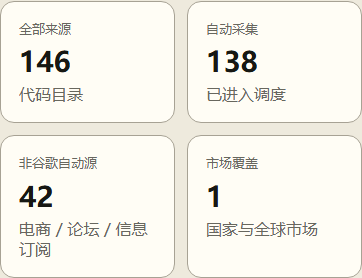
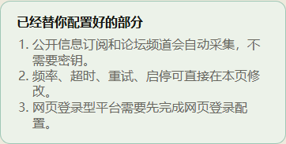
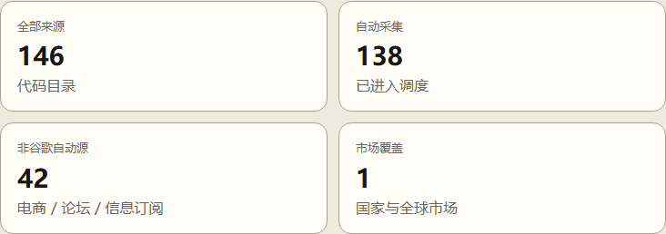
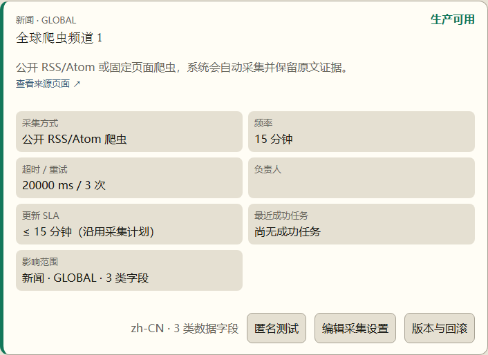
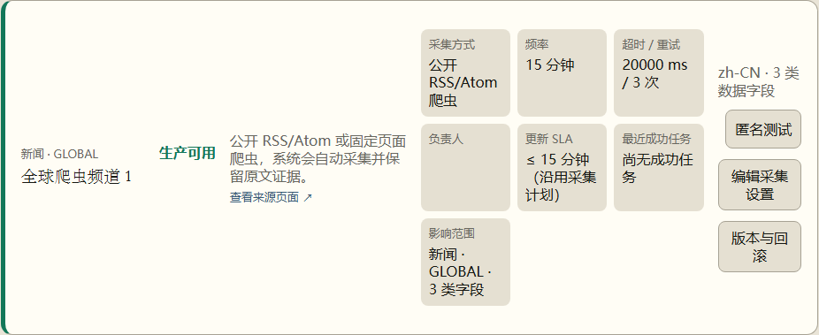
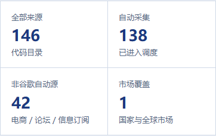
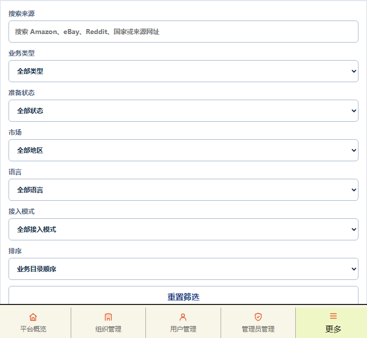

<!doctype html><html lang="zh-CN"><meta charset="utf-8"><title>P48 来源频道实际 Vue 审核</title><style>body{margin:0;padding:24px;background:#e9eef5;color:#142a46;font-family:sans-serif}main{display:grid;gap:24px}article{padding:16px;background:white;border:1px solid #cfd9e7}h1,h2{margin:0 0 12px}h2{font-size:16px}img{display:block;max-width:100%;height:auto;border:1px solid #d8e0eb}</style><main><h1>P48 来源频道实际 Vue · 默认目录</h1><article><h2>baseline · 390 · heading</h2></article><article><h2>baseline · 390 · metrics</h2></article><article><h2>baseline · 390 · help</h2></article><article><h2>baseline · 390 · filters</h2></article><article><h2>baseline · 390 · first-record</h2></article><article><h2>baseline · 390 · page-two</h2></article><article><h2>baseline · 760 · heading</h2></article><article><h2>baseline · 760 · metrics</h2></article><article><h2>baseline · 760 · help</h2></article><article><h2>baseline · 760 · filters</h2></article><article><h2>baseline · 760 · first-record</h2></article><article><h2>baseline · 760 · page-two</h2></article><article><h2>baseline · 1024 · heading</h2></article><article><h2>baseline · 1024 · metrics</h2></article><article><h2>baseline · 1024 · help</h2></article><article><h2>baseline · 1024 · filters</h2></article><article><h2>baseline · 1024 · first-record</h2></article><article><h2>baseline · 1024 · page-two</h2></article><article><h2>baseline · 1440 · heading</h2></article><article><h2>baseline · 1440 · metrics</h2></article><article><h2>baseline · 1440 · help</h2></article><article><h2>baseline · 1440 · filters</h2></article><article><h2>baseline · 1440 · first-record</h2></article><article><h2>baseline · 1440 · page-two</h2></article><article><h2>review · 390 · heading</h2></article><article><h2>review · 390 · metrics</h2></article><article><h2>review · 390 · help</h2></article><article><h2>review · 390 · filters</h2></article><article><h2>review · 390 · first-record</h2></article><article><h2>review · 390 · page-two</h2></article><article><h2>review · 760 · heading</h2></article><article><h2>review · 760 · metrics</h2></article><article><h2>review · 760 · help</h2></article><article><h2>review · 760 · filters</h2></article><article><h2>review · 760 · first-record</h2></article><article><h2>review · 760 · page-two</h2></article><article><h2>review · 1024 · heading</h2></article><article><h2>review · 1024 · metrics</h2></article><article><h2>review · 1024 · help</h2></article><article><h2>review · 1024 · filters</h2></article><article><h2>review · 1024 · first-record</h2></article><article><h2>review · 1024 · page-two</h2></article><article><h2>review · 1440 · heading</h2></article><article><h2>review · 1440 · metrics</h2></article><article><h2>review · 1440 · help</h2></article><article><h2>review · 1440 · filters</h2></article><article><h2>review · 1440 · first-record</h2></article><article><h2>review · 1440 · page-two</h2></article></main></html>